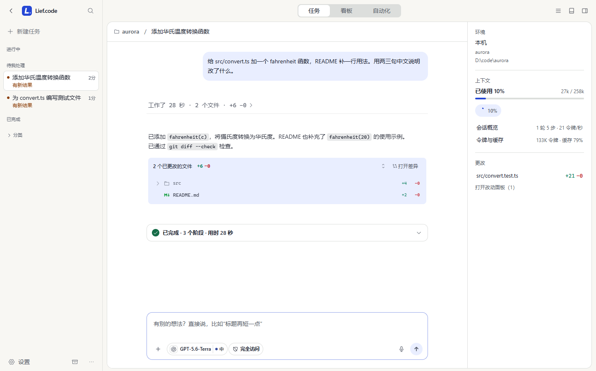
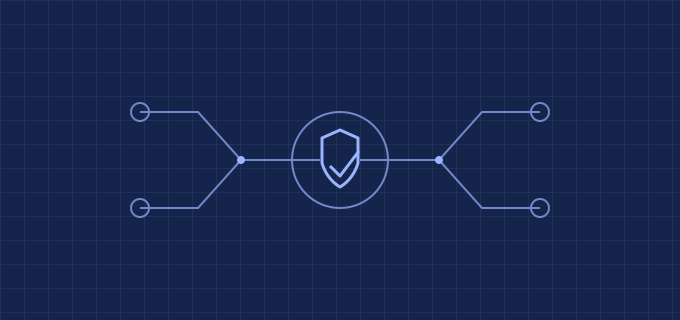

愿景 · 一人即团队
让一个工程师能在多个仓库和分支上并行推进开发，同时看清每个 Agent 的上下文、权限与代码改动。
产品 Lief.codeAI 正在把「写代码」从人的手里接过去，真正稀缺的，变成了把业务拆清楚、把一群 AI 组织起来、把结果验收到位的人。我从 Python / FastAPI 起步，先打通多模型调用、企业知识库和生成式图像工作流，再在攀升主导企业级多 Agent 中台落地——选品、Listing、客服、素材、运营日报统一进一个调度中枢。我把并行开发、权限审批与代码审阅带进了本地优先的开发工作台 Lief.code，并已开源发布。
让一个工程师能在多个仓库和分支上并行推进开发，同时看清每个 Agent 的上下文、权限与代码改动。
产品 Lief.code在一套本地工作台中接入 Codex、Claude Code 等 10 家编程 Agent，用独立 Git 工作树隔离任务，在提交前检查差异，必要时回退。
看产品与架构先定规格、权限和验收标准，再让 Agent 在独立工作树并行开发。我通过审批、差异审阅和真机验证把关。
我的方法论先定数据权限、接口和验收条件，再把文档上传、检索与问答拆成可联调的任务。
AskBase用 Orchestrator 按意图和复杂度调度任务，LangGraph 管理状态、重试和回跳。
跨境零售 AI Agent 中台把向量和关键词检索融合重排，回答附来源引用。用上下文压缩和分层记忆衔接长任务。
中台 RAG统一工具参数和返回结构，接入词库检索、合规校验与业务 API。
中台工具层规则校验结合 LLM-as-Judge，跟踪失败案例。退款、批量导出等高风险操作经人工确认。
中台评测用 Python、FastAPI 和 Celery 做服务，配合 Redis、PostgreSQL 与 Docker，保留任务日志和监控。
工作经历2021.09 – 2024.06
学习商务数据分析与应用，担任班长并联合创办摄影社团。
2023.12 – 2024.09
AI 应用工程师
用 Python 做多模型统一调用、限流、用量记录、熔断与降级，接入 Celery / Redis 批量推理。搭建 Dify RAG 文档处理流程，负责电商 LoRA 微调与 A/B 评估，将 ComfyUI 图像工作流封装为异步批量服务。
2024.10 – 2026.10
AI Agent 工程师
主导企业级多 Agent 系统从 0 到生产落地：设计分层 Multi-Agent 架构与意图路由，把选品、Listing、客服、素材生成、运营日报统一进一个调度中枢；搭建面向 B 端的生成式 AI 服务平台，让企业零代码搭建专属知识助手；封装 MCP 工具与可复用 Skill，加入规则校验、LLM-as-Judge 评测、人工确认与 Docker 私有化交付。
2026 年起
定义、开发并开源发布本地多 Agent 工作台 Lief.code v0.1.11，提供 Windows 桌面端与本地 Web。持续迭代 JARVIS 多智能体平台，发布开源工具 claude-familiar（npm 累计下载 1,475 次）。

并行开发、权限审批与 Git 差异审阅，集中在一套本地工作台
个人产品 · 独立开发 · 深度定制 · 已开源 · v0.1.11

把选品、上新、客服、素材、运营日报统一进一个 Agent 调度中枢
工作项目 · 攀升协手 · AI Agent 工程师（核心开发）

跨会话记忆、任务编排、执行治理与贾维斯指挥台
个人项目 · 2026.01 至今

让每一家企业都能低成本、高安全地拥有自己的 AI 助手
工作项目 · 攀升协手 · AI Agent 工程师
市场分析 → 文案生成 → 合规自查，一条流水线批量产出商品内容
工作项目 · 攀升协手 · AI Agent 工程师
跨境多语种客服 7×24 自动响应，意图识别准确率大幅提升
工作项目 · 攀升协手 · AI Agent 工程师

多源竞品研究与实时进度反馈
个人项目 · 2026.05
比较全球 AI 模型按量与订阅价格，按使用量估算月成本
个人项目 · 2026.10 至今 · 在线可用
用规格写明输入、输出、权限和失败行为，拆阶段交给 Claude Code 与 Codex 实现，再逐项联调。
查看编码规范简单意图直达工具，中等任务由 ReAct 处理，跨模块任务由 LangGraph 管理状态、重试和回跳。
查看中台架构用规则校验结构和合规要求，再用 LLM-as-Judge 检查内容。失败样例回流改规则和补测。
查看中台评测高风险操作由 Hook 或业务流程暂停确认。开发 Lief.code 时，我从真实入口复测权限、差异审阅与回退，并把失败步骤单独记录。
Lief.code 项目案例Claude Code 状态栏 AI 宠物：任何终端都能跑、复用已登录的 Claude Code 零额外 API 成本、会读 CLAUDE.md 认识你的项目。7 个版本，npm 累计下载 1,475 次。
浏览 GitHub用 SVG 和 Canvas 在浏览器里交互查看 Agent 工作流。
浏览 GitHubAI 编码规范库，包含 AGENTS.md、CLAUDE.md 模板与提示词。
浏览 GitHub
从选题核查到文案、渲染、三路评审和发布包，归档 54 期正式成片。
查看流水线按风格与配色查图，多模态重排和去重后在飞书回图。
查看检索流程比特币实时数据可视化网页（Cloudflare Pages + D1）。
打开作品2021.09 – 2024.06
商务数据分析与应用 · 大专 · 班长、联合创办摄影社团
当一个工程师能同时让多个 Agent 在不同分支推进开发，管理工作区、权限和代码改动就成了与写代码一样重要的事。如今会话、额度和改动分散在各家 CLI，工程师需要一个统一的地方决定哪个任务继续、哪些命令获准执行、哪些改动可以提交。
Lief.code 是本地优先的多 Agent 开发工作台，提供 Windows 桌面端和本地 Web。接入 Codex、Claude Code、Cursor、Grok、OpenCode、Antigravity、Kiro、Pi、Muse Code、fx，可复用已有的 CLI 和账号。
三栏指挥台 · 左侧管理会话，中间进行对话与任务执行，右侧显示环境、上下文、额度与改动。顶部可切换任务、看板和自动化，看板需自备本机任务服务。
工程工作流 · 用独立 Git Worktree 隔离并行任务，通过 Git 检查点回退文件与会话。按 Agent 支持的模式选择需审批、自动接受编辑、自动或完全访问，并在工作台审阅差异、操作终端、查看用量与额度、配置定时任务。外部工具可通过内置 MCP 服务和 lief CLI 接入。
Windows 桌面端 / 本地 Web → 本地 Node 服务 → 各家 Agent CLI → 差异审阅 / 权限审批 / Git 回退
我定义了本地优先的产品方向，重做三栏布局和视觉，设简体中文为默认语言，补齐 10 种界面语言的新增文案，并为单厂商接入按模型系列筛选可选项。
我移除托管账号、云端中继和产品遥测，审计出站请求，将代码托管集成精简到 GitHub，并负责真机测试、打包与公开发布。
部分代码源自 T3 Code（MIT）。
Codex 与 Claude Code 均跑通真机任务。Windows 真机全流程 22 步通过 21 步，覆盖项目、对话、改文件、看差异、界面提交 Git、停止、拒绝审批、回退、终端、排队、换模型、会话管理、搜索、定时任务、用量、独立工作树和刷新。审批后执行命令这一项在 Windows 沙箱返回「拒绝访问」。
空闲内存约 700 MB。与上游同环境测试对照，没有新增失败。
扩大 Windows 真机验证的覆盖，把不同 Agent 的权限、回退和独立工作树场景纳入回归检查，并根据开源使用反馈确定迭代优先级。
从 GitHub Releases 下载 Windows 安装包。首次启动后，在「设置 → 智能体提供方」启用本机已安装的 Agent CLI。
看板需要自备本机任务服务。任务和自动化视图可独立使用。
商品内容制作涉及市场资料整理、文案创作与合规自查，多个环节需要人工反复跟进，质量依赖业务资料和审核经验。
梳理市场分析、文案生成和内容检查流程，按业务环节划分 Agent 职责，组织连续执行的内容生产工作流。引入企业内部专业资料作为生成依据，减少无依据的商品描述，并让专业资料在不同商品内容中复用。把合规自查接入生产流程，减少人工逐份跟进与初审，支持商品文案及视频内容批量生产。
内容生产流程落地，缩短内容制作周期，形成可重复执行的工作流，支持业务持续批量产出商品内容。
跨境零售面对多语种客服，意图识别准确率不足，长难句与低资源语种识别困难。
14 路意图路由（13 条规则 + 1 个 LLM 兜底），按复杂度与语种动态选模型，与 RAG 协同回答；Few-shot / Prompt 优化提升长难句识别；FastAPI SSE 流式 API 输出。
Top-1 意图准确率 82% → 95%，平均响应 <1.5s，客服模块 7×24 生产落地。
企业团队的选品、上新、客服、素材制作、运营日报各自找 AI 工具，能力分散、接入成本高、复合任务难编排、知识各存各的。需要一个统一中台，让业务方按场景调用 Agent。
BrainAgent + Orchestrator 双轨调度 + LangGraph；9 个内部 Agent 与外部 Agent 注册接入（44+ API 模块）；Milvus + ES 混合检索 → Rerank；5 类 LLM 统一路由 + MCP 工具市场；Docker Compose 部署（12+ 工作区）。业绩：平台化支撑多业务 Agent 复用，降低新场景接入与运维成本。
Web / API（FastAPI） Orchestrator 分级调度（直路由 / ReAct / 多 Agent） LangGraph（意图、规划、路由、执行、汇总、校验） 业务 Agent RAG / 记忆 / 生图 / MCP PostgreSQL + Redis + Qdrant
简单请求直路由，中等任务交给 ReAct，复杂任务编排多个 Agent。工作流保留执行状态，允许失败重试和回跳。
选品与需求预测 · Apify 采集 Amazon BSR 和竞品，Prophet / XGBoost 预测需求，Claude 生成选品报告。置信度不足回跳补抓，Celery 每日刷新品类数据。
Listing 优化 · 关键词挖掘、竞品分析、英文文案与 SEO 合规评分分工处理，Hook 支持中断重试和自动复盘。
多语言客服 · 识别意图，订单查询调用 Shopify Admin API，投诉或强烈负面情绪转人工。FastAPI WebSocket 回传消息，Celery worker 按需扩容。
商品素材检索与生图 · Qdrant 支持文搜图、图搜图和图文混检。解析参考图的风格参数生成 Prompt，用 ComfyUI 批量产出商品素材。
评价售后与运营日报 · 获取数据、分类、生成内容，再经人工审核输出。退款、赔付和投诉保留人工确认。
查询改写 向量检索 + 关键词检索 融合排序 重排 LLM 生成并附引用
知识分为平台合规与行业关键词库、产品文档与客服话术、部门知识库。支持 PDF、Word、Excel 和 Markdown，接入飞书同步，按部门隔离权限。
对话、推理、视觉分开选型，异常时熔断和降级。工具链包括 RAG、记忆、生图和 MCP，词库检索、跨境合规校验等 Skill 统一入参与返回结构。规则与 LLM-as-Judge 检查文案准确性与违规项，失败样例回流改规则。用 Docker Compose 部署，保留任务日志与监控告警。
架构图中台架构 Hybrid RAG
多步骤任务调度分散，跨会话信息容易丢失，危险操作和定时作业需要统一管控。
协作入口（Claude Code / Codex / Grok） Hook（提交前召回 · 危险操作确认） 任务执行（Skill / MCP / 子代理） 记忆（Qdrant 混合检索 · 时序知识图谱 · 本地文件） 定时任务（服务器 cron）
Hook 在提示词提交时召回相关背景，在高危操作执行前要求确认。Skill 复用操作流程，MCP 接入工具，子代理分工处理任务。服务端用 Qdrant 混合检索和时序知识图谱，本地用文件记忆。Claude 定规格与验收，Codex 批量执行。
执行后触发 LLM-as-Judge 评估，失败案例经根因分析写成防御规则。卡片的 Hook、Skill 和定时脚本数来自历史服务器备份的顶层统计。
支撑 AI 知识视频的批量交付。延伸作品「贾维斯指挥台」正在开发，用 Electron 将 Claude Code、Codex 与 Grok 放进同一窗口并排对话、按目录分派任务、查看 Git 变更与验收结果。
生成式 AI 普及后，大量企业希望用自己的文档、网站和知识库搭建专属 AI 助手，却普遍卡在四件事上：大模型幻觉让回答不可信；技术门槛高，普通员工搭不起来；私有数据有泄露和被二次训练的风险；缺乏合规能力。AskBase 以精准、安全、易用为核心，让每一家企业都能低成本、高安全地用上 AI。
建设企业资料管理与知识问答流程，把内部文档变成可查询、可复用的知识资源；实现企业之间的文档与知识数据隔离，支持多租户独立使用；打通知识检索与回答生成，员工用自然语言即可获取内部资料；设计标准化付费使用模式，为平台商业化打基础。
完成知识库管理、自然语言问答与多租户隔离等核心功能，形成可独立使用的企业知识服务平台。
企业文档上传（按企业隔离） 解析与分块 向量化入库 知识检索 大模型生成回答（附来源）
架构图架构示意图
多源市场研究需要拆任务、并行检索和综合发现，等待时还要知道任务进行到哪一步。
市场 / 竞品问题 规划角色（拆分研究任务） 并行研究（LangGraph · Tavily） 汇总角色（合并研究发现） 前端展示（FastAPI SSE 回传进度）

LangGraph 调度规划、并行研究与汇总，Tavily 检索资料。FastAPI SSE 回传进度事件，支持自带模型密钥（BYOK）切换模型。
历史档案记下演示与部署，流程图可回查计划、并发研究、汇总与进度回传。
作为 JARVIS 的公开演示场景上线，保留历史流程图和工作流摘录。
各家 AI 模型的定价口径分散，订阅价与按量价难以直接比较。
LiteLLM / OpenRouter + 人工核对订阅价 GitHub Actions 每日刷新 静态 JSON 价格 API Cloudflare Pages 前端
汇总模型调用与订阅价格，按使用量估算月成本，提供横向对比与 3D 城市视图。
模型价格由 GitHub Actions 定时同步，订阅价格人工核对。更新结果以静态 JSON 提供给站点。
在浏览器比较模型价格、订阅和预估月成本。